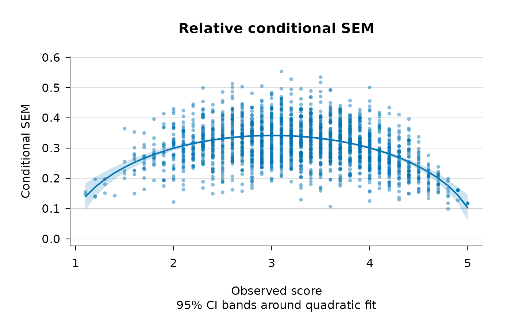

A simulated person-by-item matrix of Likert-scaled (1-5) responses
built to mimic the qualitative features of a short, positively
oriented Big-Five Conscientiousness subscale – in particular, the
Conscientiousness items of the IPIP-50 inventory (Goldberg, 1992;
Goldberg et al., 2006). It is intended as a self-contained
illustration dataset for the polytomous Likert use case in the
single-facet, person-by-item crossed Generalizability Theory design
implemented in csem_gt.
Format
An integer matrix with 2000 rows (persons) and 10 columns
(items). Each entry is an integer in \(\{1, 2, 3, 4, 5\}\).
Columns are named item01, item02, ..., item10.
Source
Simulated to be broadly comparable to the Conscientiousness subscale of the IPIP-50 inventory, as administered in the public dataset of the Open-Source Psychometrics Project (https://openpsychometrics.org/_rawdata/). The underlying instrument is described in Goldberg, L. R. (1992) and Goldberg, L. R., Johnson, J. A., Eber, H. W., Hogan, R., Ashton, M. C., Cloninger, C. R., & Gough, H. G. (2006).
Details
These are simulated data, not real IPIP-50 responses.
ipip_like was generated by drawing independent normal person,
item, and residual effects under the random-effects model that
Generalizability Theory assumes for the \(p \times i\) design, and
then rounding and clipping the resulting scores to the 1-5 Likert
metric. The pre-truncation variance components are inflated to
absorb the contraction induced by the clip-and-round step, so that
the post-truncation ANOVA estimates approximate the targets
\(\sigma^2(p) \approx 0.434\), \(\sigma^2(i) \approx 0.136\),
and \(\sigma^2(pi) \approx 1.000\), with generalizability
coefficient \(E\rho^2 \approx 0.81\). These targets are
representative of the Conscientiousness subscale of the IPIP-50
dataset distributed by the Open-Source Psychometrics Project (n.d.)
and can be reproduced by any user with access to that public
dataset via a one-way \(p \times i\) ANOVA. The matrix uses
\(A = 2{,}000\) simulated persons and \(I = 10\) items, with all
items oriented positively (any reverse-keying is assumed already
applied so that higher scores indicate higher Conscientiousness).
The full, seeded generation script is in
data-raw/make_ipip_like.R.
References
Goldberg, L. R. (1992). The development of markers for the Big-Five factor structure. Psychological Assessment, 4(1), 26-42.
Goldberg, L. R., Johnson, J. A., Eber, H. W., Hogan, R., Ashton, M. C., Cloninger, C. R., & Gough, H. G. (2006). The International Personality Item Pool and the future of public-domain personality measures. Journal of Research in Personality, 40(1), 84-96.
Open-Source Psychometrics Project. (n.d.). Raw data. https://openpsychometrics.org/_rawdata/
Examples
data(ipip_like)
dim(ipip_like)
#> [1] 2000 10
ipip_like[1:5, 1:6]
#> item01 item02 item03 item04 item05 item06
#> [1,] 3 4 5 4 4 4
#> [2,] 4 2 5 4 5 2
#> [3,] 4 5 4 4 4 4
#> [4,] 2 3 2 1 4 3
#> [5,] 5 2 5 3 4 2
# \donttest{
fit <- csem_gt(ipip_like, error_type = "relative", method = "full",
smoother = "polynomial")
fit
#> ----------------------------------------------------------------
#> Conditional SEMs in Generalizability Theory
#> ----------------------------------------------------------------
#> Design : univariate single-facet (p x i, crossed)
#> Persons (n_p) : 2000
#> G-study items : 10
#> D-study items : 10
#> Method : full
#> SE method : analytical
#> Smoothing : quadratic on observed score
#> ANOVA table
#> ----------------------------------------------------------------
#> Effect df SS MS sigma^2
#> ----------------------------------------------------------------
#> p 1999 10709.670200 5.357514 0.435002
#> i 9 2490.601200 276.733467 0.137863
#> pi 17991 18125.798800 1.007493 1.007493
#> D-study error variances and SEMs (n_i' = 10)
#> ----------------------------------------------------------------
#> sigma^2(Delta) = 0.114536 sigma(Delta) = 0.338431 (absolute)
#> sigma^2(delta) = 0.100749 sigma(delta) = 0.317410 (relative)
#> Reliability-like coefficients
#> ----------------------------------------------------------------
#> Generalizability coef. E rho^2 = 0.8119
#> Dependability coef. Phi = 0.7916
#> Quadratic smoothing fits (y = b0 + b1*score + b2*score^2)
#> --------------------------------------------------------------------------
#> Quantity b0 b1 b2 R^2 RMSE
#> --------------------------------------------------------------------------
#> rel_ev_full -0.12526 0.16103 -0.02677 0.1761 0.04126
#> Mean variance of estimator across persons
#> ----------------------------------------------------------------
#> Quantity Analytical
#> ----------------------------------
#> rel_ev_full 7.243653e-03
plot(fit, plot_type = "both", cibands = "model")

# }